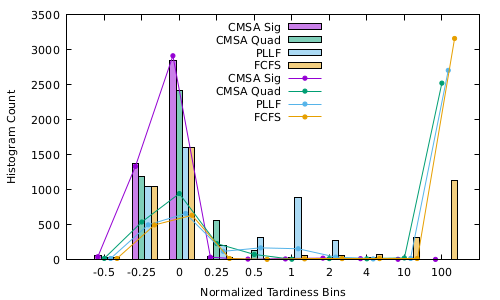
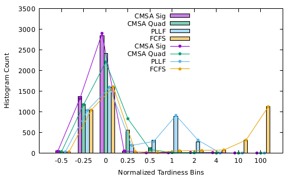

Scheduling Workflow Tasks in Cluster of Multi-core, Memory-Managed Machines (2009) [1]
Tasks are Individually-Schedulable Units of a Workflow
Workflows are a Precedence-Oriented DAG of Tasks Representing a "Job" Submitted to the System by a User along with Deadline
Tasks defined as utilization of two resources provided by a Machine:
Efficiency (Productivity) of a Machine based on
cumulative tasks' CPU utilization, C, and Machine
CPU core count (4)
$e_c ={max\{1, {4 \over C}\}}$
Tasks' second resource utilization:
Efficiency (Productivity) of a Machine based on
cumulative tasks' Memory utilization:
$e_m ={K \over K + {1 \over {1 \over M}-1}}$
Machines' Efficiency based on CPU and Memory loading of executing tasks $e = e_c e_m$
Task also defined by an amount of "work" that must be done (i.e. CPU cycles). The executing machine's efficiency impacts the rate of the amount of work done over time.
Three types of Workflows modeled, differentiated by:
Three Task-Scheduling Algorithms:
In order to evaluate the impact of error in the information provided to scheduling algorithms, we propose distinguishing Model Platform from Actual Platform
This allows Model of Workflow/Tasks (or Machines) to have "error" distinct from the Actual components
Input to the Scheduler comes from Modeled Workflow/Task Requirements and Model Platform resource availabilty
Using Simulation software, the amount of error in the Model (Tasks' CPU work requirement) was taken from a uniformly-distributed random number distribution [-X,X] where X varied from 0.001 to 0.9
Each result represented averaged value across 10 simulations where random error term was unique
Percentage of all Workflows Late
| Error, X | CMSA (Quad) | CMSA (Sig) | FCFS | PLLF |
|---|---|---|---|---|
| 0.0 | 16.54 | 1.77 | 38.49 | 38.72 |
| 0.001 | 30.52 | 1.92 | 61.39 | 50.96 |
| 0.005 | 34.75 | 1.84 | 59.48 | 52.39 |
| 0.01 | 30.86 | 2.99 | 60.35 | 49.39 |
| 0.05 | 28.87 | 8.99 | 63.60 | 49.54 |
| 0.1 | 32.11 | 15.60 | 60.77 | 52.65 |
| 0.5 | 34.34 | 24.96 | 52.85 | 55.68 |
| 0.9 | 32.93 | 26.12 | 54.36 | 58.64 |
Effect on Tardiness of Small Error, $X=0.001$

Bars represent no error, lines error $X=0.001$
Most scheduling algorithms studied have little robustness with respect to even small amount of error
Underestimated work requirement (i.e. negative error in model) leads to overloading machines, reducing efficiency, compounding the problem of underestimating
Feedback from Actual Platform of Task Completions Crucial to Preventing Problem of Underestimatd Task Work Requirement Leading to Unrobust Scheduling
Effect of Including Actual Platform Feedback even with Large Error, $X=0.9$

Bars represent no error, lines error $X=0.9$